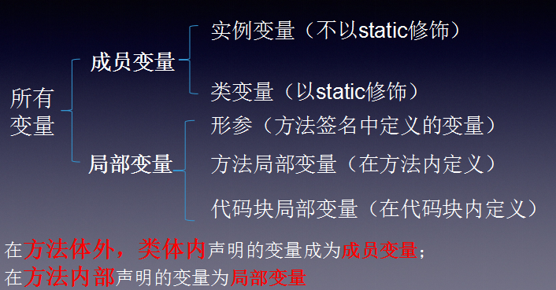
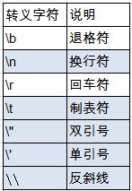

JavaSe基础第二节
Java数据类型
- 在java源代码中，每个变量都必须声明一种类型（type）。有两种类型：primitive type和reference type。引用类型引用对象（reference to object），而基本类型直接包含值（directly contain value）。因此，Java数据类型（type）可以分为两大类：基本类型（primitive types）和引用类型（reference types）。primitive types 包括boolean类型以及数值类型（numeric types）。numeric types又分为整型（integer types）和浮点型（floating-point type）。整型有5种：byte short int long char(char本质上是一种特殊的int)。浮点类型有float和double。
一、基本数据类型之整型
-
byte:byte由1个字节8位表示，是最小的整数类型。主要用于节省内存空间关键。当操作来自网络、文件或者其他IO的数据流时，byte类型特别有用。取值范围为:[-128, 127]. byte的默认值为(byte)0,如果我们试图将取值范围外的值赋给byte类型变量，则会出现编译错误，例如 byte b = 128；这个语句是无法通过编译的。
对byte类型进行数学运算时，会自动提升为int类型，如果表达式中有double或者float等类型，也是自动提升。例如：1
2
3
4//byte,short,char之间不会相互转换，他们三者在计算时首先转换为int类型。当把任何基本类型的值和字符串值进行连接运算时(+)，基本类型的值将自动转化为字符串类型。
byte str1 = '1';
byte str1 = '2';
System.out.println(str1+str2);//输出99 -
short：占2个字节，取值范围为：[- 2^15, 2^15 - 1]。short可能是最不常用的类型了。可以通过整型字面值或者字符字面值赋值，前提是不超出范围（16 bit）。
short类型参与运算的时候，一样被提升为int或者更高的类型。（顺序为 byte short int long float double). -
int：占4个字节即：32bits, [- 2^31, 2^31 - 1].有符号的二进制补码表示的整数。常用语控制循环，注意byte 和 short在运算中会被提升为int类型或更高。Java 8以后，可以使用int类型表示无符号32位整数[ 0, 2^31 - 1]。 -
long：占8个字节即：64bits，[- 2^63, 2^63 - 1,默认值为0L].当需要计算非常大的数时，如果int不足以容纳大小，可以使用long类型。如果long也不够，可以使用BigInteger类。注意：要在字面值尾部加l或L，如：12245L
二、基本数据类型之浮点型
-
float:使用32 bit表示，对应单精度浮点数，运行速度相比double更快，占内存更小，但是当数值非常大或者非常小的时候会变得不精确。精度要求不高的时候可以使用float类型。
对byte类型进行数学运算时，会自动提升为int类型，如果表达式中有double或者float等类型，也是自动提升。 -
double：64为表示，将浮点子面子赋给某个变量时，如果不在字面值后面加f或者F，则默认为double类型。java.lang.Math中的函数都采用double类型。如果double和float都无法达到想要的精度，可以使用BigDecimal类。
三、基本数据类型之其他型
-
boolean:boolean类型只有两个值true和false，默认为false。boolean与是否为0没有任何关系，但是可以根据想要的逻辑进行转换。许多地方都需要用到boolean类型。 -
char：占2个字节即：16bits, [0, 65535], [0, 2^16 -1],从'\u0000'到'\uffff'。无符号，默认值为'\u0000'。Java使用Unicode字符集表示字符，Unicode是完全国际化的字符集，可以表示全部人类语言中的字符。Unicode需要16位宽，所以Java中的char类型也使用16 bit表示。 赋值可能是这样的：ASCII字符集占用了Unicode的前127个值。之所以把char归入整型，是因为Java为char提供算术运算支持，例如可以ch2++;之后ch2就变成Y。当char进行加减乘除运算的时候，也被转换成int类型，必须显式转化回来。
四、引用数据类型
-
类class，如：String类代表字符串，Java 程序中的所有字符串字面值（如"abc"）都作为此类的实例来实现。检查序列的单个字符、比较字符串、搜索字符串、提取子字符串、创建字符串副本、在该副本中、所有的字符都被转换为大写或小写形式。 -
接口interface，如：List<E>：列表 ，此接口的用户可以对列表中每个元素的插入位置进行精确地控制。用户可以根据元素的整数索引（在列表中的位置）访问元素，并搜索列表中的元素。List 接口提供了两种搜索指定对象的方法。从性能的观点来看，应该小心使用这些方法。在很多实现中，它们将执行高开销的线性搜索。List接口提供了两种在列表的任意位置高效插入和移除多个元素的方法。 -
数组array：
基本类型之间的转换
-
我们看到，将一种类型的值赋给另一种类型是很常见的。在Java中，boolean类型与所有其他7种类型都不能进行转换，这一点很明确。对于其他7中数值类型，它们之间都可以进行转换，但是可能会存在精度损失或者其他一些变化。转换分为自动转换和强制转换。对于自动转换（隐式），无需任何操作，而强制类型转换需要显式转换，即使用转换操作符（type）。首先将7种类型按下面顺序排列一下：
byte <（short=char）< int < long < float < double；如果从小转换到大，可以自动完成，而从大到小，必须强制转换。short和char两种相同类型也必须强制转换。
一、自动类型转换
-
自动类型转换的逆过程，将容量大的数据类型转换为容量小的数据类型。使用时要加上强制转换符（()），但可能造成精度降低或溢出,格外要注意。通常，字符串不能直接转换为基本类型，但通过基本类型对应的包装类则可以实现把字符串转换成基本类型。如：
String a = “43”; int i = Integer.parseInt(a);boolean类型不可以转换为其它的数据类型。 -
自动转换时发生扩宽（widening conversion）。因为较大的类型（如int）要保存较小的类型（如byte），内存总是足够的，不需要强制转换。如果将字面值保存到byte、short、char、long的时候，也会自动进行类型转换。注意区别，此时从int（没有带L的整型字面值为int）到byte/short/char也是自动完成的，虽然它们都比int小。在自动类型转化中，除了以下几种情况可能会导致精度损失以外，其他的转换都不能出现精度损失。
》int--> float
》long--> float
》long--> double
》float -->double without strictfp
除了可能的精度损失外，自动转换不会出现任何运行时（run-time）异常。
一、强制类型转换
- 如果要把大的转成小的，或者在short与char之间进行转换，就必须强制转换，也被称作缩小转换（narrowing conversion）,因为必须显式地使数值更小以适应目标类型。强制转换采用转换操作符（）。严格地说，将byte转为char不属于narrowing conversion），因为从byte到char的过程其实是byte-->int-->char，所以widening和narrowing都有。强制转换除了可能的精度损失外，还可能使模（overall magnitude）发生变化。
-
1
2
3
4
5
6
7
8
9
10
11
12
13
14
15
16
17
18
19
20
21
22
23
24
25
26
27
28
29
30public class Int{
public static void main(String[] args){
/*char str = 'a';
char str1 = 'b';
int num = str + str1;//最终自动转成Ascii码进行相加
System.out.println(num);//195
char str2 = '0';
char str3 = '1';
int num1 = 10;
System.out.println(str2+str3+num1);//107
//遍历打印0~127所代表的字符
for(int i = 0;i<127;i++){
char s = (char)i;
System.out.println(i+":"+s);
}*/
/*
byte,short,char之间不会相互转换，他们三者在计算时首先转换为int类型。当把任何基本类型的值和字符串值进行连接运算时(+)，基本类型的值将自动转化为字符串类型。
*/
byte b = 12;
short s = 455;
char c = '2';
String str = "100";
System.out.println(b+s+c);//517
System.out.println(str+b+s);//10012455
System.out.println(str+(b+s));//100467
byte str1 = '1';
byte str2 = '2';
System.out.println(str1+str2);//99
}
} -
表达式中的自动类型提升
除了赋值以外，表达式计算过程中也可能发生一些类型转换。在表达式中，类型提升规则如下：
》所有byte/short/char都被提升为int。
》如果有一个操作数为long，整个表达式提升为long。float和double情况也一样。 -
字面值赋值:
在使用字面值对整数赋值的过程中，可以将int literal赋值给byte short char int，只要不超出范围。这个过程中的类型转换时自动完成的，但是如果你试图将long literal赋给byte，即使没有超出范围，也必须进行强制类型转换。例如 byte b = 10L；是错的，要进行强制转换。
引用数据类型之String
- string是java中的字符串。String类是不可变的,对String类的任何改变,都是返回一个新的String类对象。
- String类属于引用类型，可用null赋值。 String类是一个典型的不可变类，String对象创建出来就不可能被改变。创建出的字符串将存放在数据区，保证每个字符串常量只有一个，不会产生多个副本。
一、Java中的String与常量池关系
- 1. 首先String不属于8种基本数据类型，String是一个对象。因为对象的默认值是null，所以String的默认值也是null；但它又是一种特殊的对象，有其它对象没有的一些特性。
- 2. new String()和new String(“”)都是申明一个新的空字符串，是空字符串不是null。
-
3.
String str=”kvill”；String str=new String (“kvill”);的区别：
在这里，我们不谈堆，也不谈栈，只先简单引入常量池这个简单的概念。 常量池(constant pool)指的是在编译期被确定，并被保存在已编译的.class文件中的一些数据。它包括了关于类、方法、接口等中的常量，也包括字符串常量。看例1： -
1
2
3
4
5
6
7
8String s0=”kvill”;
String s1=”kvill”;
String s2=”kv” + “ill”;
System.out.println( s0==s1 );
System.out.println( s0==s2 );
结果为：
true
true -
首先，我们要知道Java会确保一个字符串常量只有一个拷贝。
因为例子中的s0和s1中的”kvill”都是字符串常量，它们在编译期就被确定了，所以s0==s1为true；而”kv”和”ill”也都是字符串常量，当一个字符串由多个字符串常量连接而成时，它自己肯定也是字符串常量，所以s2也同样在编译期就被解析为一个字符串常量，所以s2也是常量池中”kvill”的一个引用。
所以我们得出s0==s1==s2;
用new String() 创建的字符串不是常量，不能在编译期就确定，所以new String() 创建的字符串不放入常量池中，它们有自己的地址空间。看例2： -
1
2
3
4
5
6
7
8
9
10String s0=”kvill”;
String s1=new String(”kvill”);
String s2=”kv” + new String(“ill”);
System.out.println( s0==s1 );
System.out.println( s0==s2 );
System.out.println( s1==s2 );
结果为：
false
false
false - 例2中s0还是常量池中”kvill”的应用，s1因为无法在编译期确定，所以是运行时创建的新对象”kvill”的引用，s2因为有后半部分new String(“ill”)所以也无法在编译期确定，所以也是一个新创建对象”kvill”的应用;明白了这些也就知道为何得出此结果了。
-
4. 关于String是不可变的
这一说又要说很多，大家只要知道String的实例一旦生成就不会再改变了，比如说：
String str=”kv”+”ill”+” “+”ans”;就是有4个字符串常量，首先”kv”和”ill”生成了”kvill”存在内存中，然后”kvill”又和” “ 生成 ”kvill “存在内存中，最后又和生成了”kvill ans”;并把这个字符串的地址赋给了str,就是因为String的“不可变”产生了很多临时变量，这也就是为什么建议用StringBuffer的原因了，因为StringBuffer是可改变的。 -
1
2
3
4
5
6
7
8
9String str1 = "100hei";
String str2 = "100hei";
System.out.println(str1==str2);//输出true
String str3 = "100"+"hei";
System.out.println(str3==str1);//输出true
String str4 = new String("100hei");
System.out.println(str4==str1);//输出false
str4 = "100hei";
System.out.println(str4==str1);//输出true
二、Integer.parseInt()与Integer.toString()的用法
- Integer.parseInt(数字字符串，表明数字字符串的进制类型)
-
1
2
3
4
5
6
7
8
9
10
11String num = "100";
int num1 = Integer.parseInt(num);
System.out.println(num1);//输出100
int num2 = Integer.parseInt("010");
System.out.println(num2);//输出10
int num3 = Integer.parseInt("010",2);//二进制转成十进制
System.out.println(num3);//输出2
int num4 = Integer.parseInt("010",8);//八进制转成十进制
System.out.println(num4);//输出8
int num5 = Integer.parseInt("ff",16);//十六进制转成十进制
System.out.println(num5);输出//255 - Integer.toString(十进制数，要转换成的进制)；返回的是一个字符串，要用String接收。
-
1
2
3
4
5
6
7
8String num6 = Integer.toString(10);
System.out.println(num6);//输出10
String num7 = Integer.toString(10,2);//十进制转成二进制
System.out.println(num7);//输出1010
String num8 = Integer.toString(10,8);//十进制转成八进制
System.out.println(num8);//输出12
String num9 = Integer.toString(10,16);//十进制转成十六进制
System.out.println(num9);//输出a
Java变量的分类和声明
-
变量的概念：
1.内存中的一个存储区域
2.该区域有自己的名称（变量名）和类型（数据类型）
3.Java中每个变量必须先声明，后使用
4.该区域的数据可以在同一类型范围内不断变化
-
使用变量注意：
1.变量的作用域：一对{ }之间有效
2.初始化值
- 定义变量的格式： 数据类型 变量名 = 初始化值
- 变量是通过使用变量名来访问这块区域的
- 
一、Java变量的命名
- 标识符： Java 对各种变量、方法和类等要素命名时使用的字符序列称为标识符，凡是自己可以起名字的地方都叫标识符。
-
定义合法标识符规则：
1.由26个英文字母大小写，0-9 ，_或 $ 组成
2.数字不可以开头。
3.不可以使用关键字和保留字，但能包含关键字和保留字。
4.Java中严格区分大小写，长度无限制。
5.标识符不能包含空格。
-
Java中的名称命名规范：
包名：多单词组成时所有字母都小写：xxxyyyzzz
类名、接口名：多单词组成时，所有单词的首字母大写：XxxYyyZzz
变量名、方法名：多单词组成时， 第一个单词首字母小写， 第二个单词开始每个单词首字母大写：xxxYyyZzz
常量名：所有字母都大写。多单词时每个单词用下划线连接：XXX_YYY_ZZZ
- 注意：在起名字时，为了提高阅读性，要尽量有意义，“见名知意”
常用转义字符
- Java中还允许使用转义字符‘\’来将其后的字符转变为特殊字符型常量。例如：char c3 = ‘\n’; // '\n'表示换行符直接使用 Unicode 值来表示字符型常量：‘\uXXXX’。其中，XXXX代表一个十六进制整数。如：\u000a 表示 \n。 char类型是可以进行运算的。因为它都对应有Unicode码
-
\r：return 到当前行的最左边。
\n：newline 向下移动一行，并不移动左右。
Linux中\n表示回车+换行；
Windows中\r\n表示回车+换行。
Mac中\r表示回车+换行。
历史： 回车”（Carriage Return）和“换行”（Line Feed）这两个概念的来历和区别。 在计算机还没有出现之 前，有一种叫做电传打字机（Teletype Model 33，Linux/Unix下的tty概念也来自于此）的玩意，每秒钟可以打10个字符。但是它有一个问题，就是打完一行换行的时候，要用去0.2秒，正 好可以打两个字符。要是在这0.2秒里面，又有新的字符传过来，那么这个字符将丢失。 于是，研制人员想了个办法解决这个问题，就是在每行后面加两个表示结束的字符。一个叫做“回车(return)”，告诉打字机把打印头定位在左边界；另一个叫做“换行(newline)”，告诉打字机把纸向下移一行。这就是“换行”和“回车”的来历，从它们的英语名字上也可以看出一二。 - 